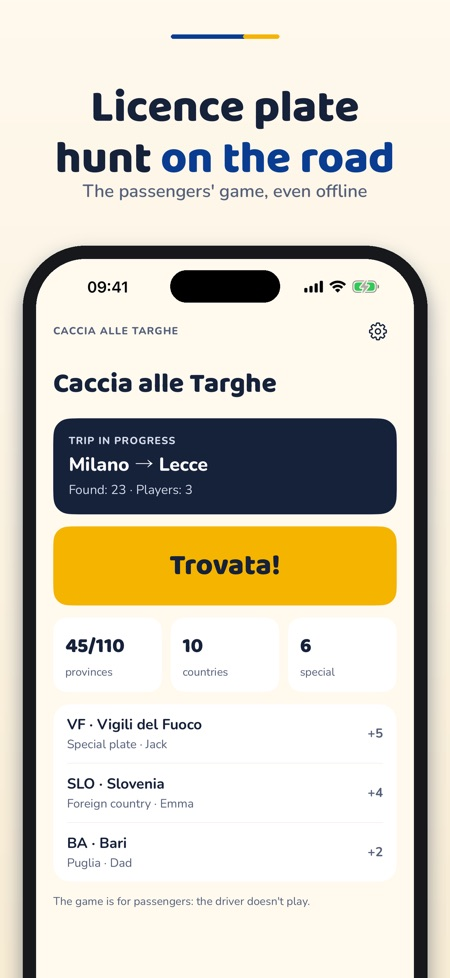
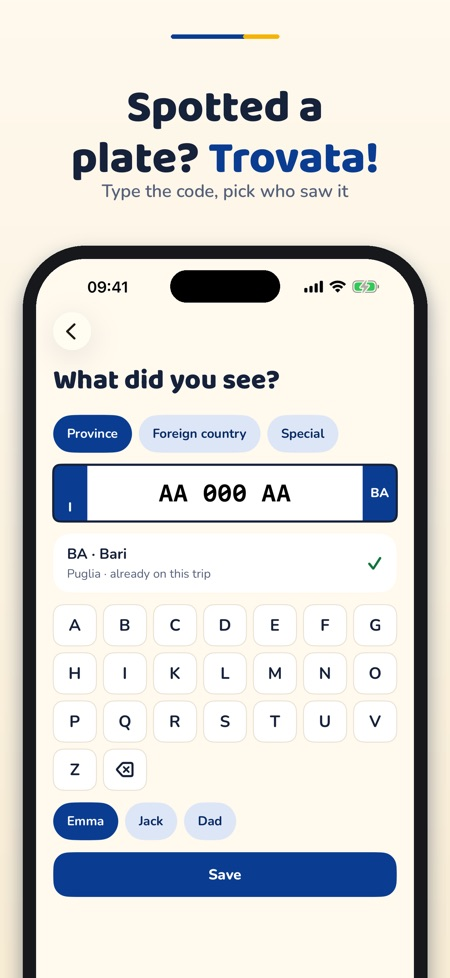
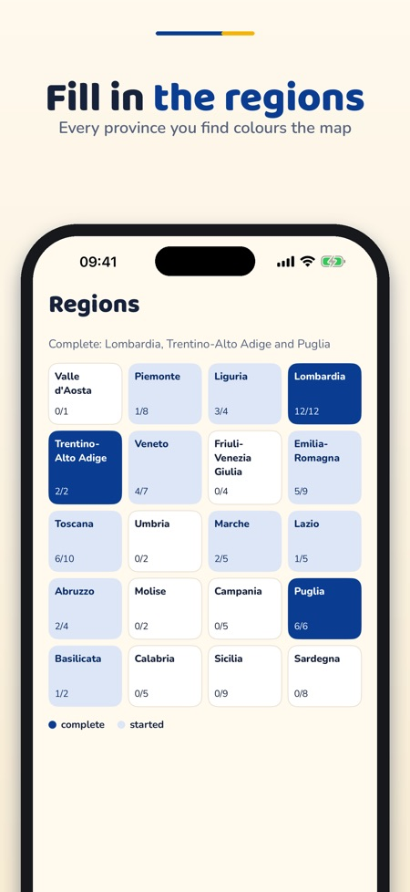

Licence plate road trip game. The car-trip game: spot Italian province codes, special plates and foreign countries, fill in the map and challenge the family.



Caccia alle Targhe is a game for passengers on car trips: collect Italian provinces, special plates and foreign countries.
Italian provinces, one trip and two players can be used without a purchase. A one-time purchase unlocks special plates, foreign countries, unlimited trips, up to six players, the quiz and the packs with Swiss cantons and French départements. No subscription.
The game is for passengers, not for the driver. Only codes (province, country, category) are saved, never full plate numbers.